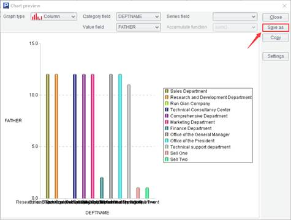
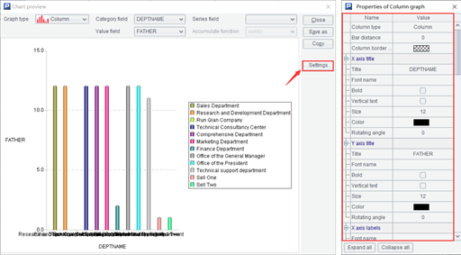

Click this item to view data in a result table sequence in the form of a graph. Column graph, pie graph and line graph are supported. Users can configure category field, numeric field, series field and an aggregate function for a graph; and perform ¡°Save as¡±, ¡°Copy¡± and configurations over a graph.

Click ¡¾Save as¡¿to save a graph in a gif, png, jpg or svg format;
Click ¡¾Copy¡¿ to copy and paste a graph;
Click ¡¾Config¡¿to configure properties for a graph, such as chart element, column chart type, X/Y axis title, X/Y axis labels and axis color.
